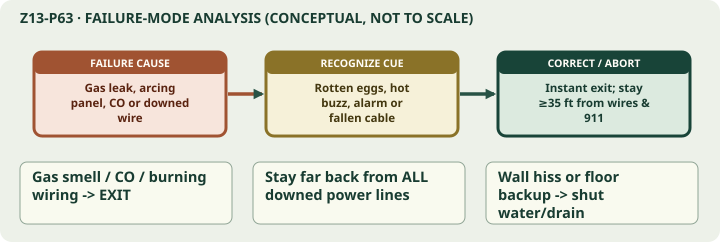

Z13-P63 · Home survival and utilities · New manuscript
Recognize dangerous residential utility failure cues requiring immediate shutoff or exit
Train every household member to spot urgent electrical, gas, water, and combustion anomalies before fires, explosions, or electrocution occur.
When it applies · Everyday residential living, severe storms, and utility restoration periods.
Equipment · Printed emergency utility numbers, flashlight, and outdoor family meeting point.

Actions
- Evacuate immediately and call 911/utility from outside for ANY gas-leak cue (rotten-egg odor, hissing pipes), electrical-fire cue (burning plastic/fish odor, hot/buzzing breaker panel, sparking outlets, flickering partial voltage), or carbon monoxide alarm.[U11, U04, C07]
- Treat sagging or downed overhead power lines in the yard or street as energized and LETHAL—stay at least 35+ feet back (never touch fences, puddles, or tree limbs touching a wire) and call 911 and the electric utility immediately.[D04, T01]
- Treat sudden water-pressure loss paired with hissing inside walls, bulging wet ceilings, or gurgling basement sewer drains as immediate shutoff/containment triggers to prevent electrical contact and structural collapse.[U08, U07]
Failure recognition · Ignoring a faint fishy burnt-plastic smell near a bedroom outlet or walking under a downed storm power line to check a fence.[U04, D04]
Verify · Confirm household members can name the four instant-evacuation utility cues (gas odor, CO alarm, burning/arcing electrical, downed lines).[U11, C07, U04]
Stop or change course · Any active sparking, gas smell, CO alarm, downed power line, or water reaching live outlets overrides property checks—get people out immediately.[U11, C07, D04]
Evidence and editorial notes
- C07 · CPSC · Carbon Monoxide Fact Sheet (current web edition)
- Section: CO poisoning symptoms; what to do if suspected · Conditions: Suspected carbon monoxide exposure
Support: Escape to fresh air immediately and contact emergency services. Symptoms can include headache, dizziness, nausea and confusion.
Limitations: CO is colorless and odorless; symptoms mimic viral illness or altitude fatigue and can incapacitate sleepers without waking. · Conflicting evidence: None; aligns with CDC-CO.
Editorial note: Standard CO emergency stop condition across Z02 and Z03. · Specialist reviewer: Carbon monoxide safety and emergency medicine
Primary source · checked 2026-11-24 - D04 · FEMA / Ready.gov · Thunderstorms and Lightning (current web edition)
- Section: Severe Thunderstorms, Straight-Line Winds, Hail, and Lightning · Conditions: Severe Thunderstorm Warnings, derechos, and electrical storms
Support: Move indoors to a substantial building immediately when thunder is heard or severe wind warnings issue; stay away from windows, corded appliances, and plumbing during lightning, and avoid downed limbs and energized downed lines after derechos.
Limitations: Straight-line derecho winds can rival tornado damage across hundreds of miles and cause multi-day regional power blackouts. · Conflicting evidence: None; integrates with E07 and E18.
Editorial note: Grounds severe-storm, hail, and straight-line wind response cards. · Specialist reviewer: Meteorology and utility safety
Primary source · checked 2026-11-24 - T01 · American Red Cross · First Aid Steps (current web edition)
- Section: First Aid Steps > Check the scene; check the person · Conditions: Lay responder in United States; assess safety before contact
Support: Check scene safety, responsiveness, breathing and immediately life-threatening conditions.
Limitations: Lay guidance does not replace advanced clinical or rescue protocols. · Conflicting evidence: None; universal first-response opening gate.
Editorial note: Anchors scene-safety-first rule across Z01. · Specialist reviewer: EMS and wilderness medicine
Primary source · checked 2026-11-24 - U04 · FEMA / Ready.gov · Home Fires (current web edition)
- Section: Home Fires > Smoke Alarms, Fire Extinguishers, and Escape Plans · Conditions: Residential fire prevention during outages and supplemental heating
Support: Test smoke alarms monthly on every level and outside sleeping areas, keep two exits clear from every room, store fuels outside living spaces in approved containers, and evacuate immediately if a fire exceeds incipient containment.
Limitations: Candles and improvised indoor flames dramatically elevate outage house-fire deaths. · Conflicting evidence: None; integrates with CPSC CO-alarm rules (C09).
Editorial note: Anchors outage fire prevention, fuel storage, and exit readiness in Z13. · Specialist reviewer: Fire prevention and residential safety
Primary source · checked 2026-11-24 - U07 · US EPA · Septic Systems (Onsite/Decentralized Systems) (current web edition)
- Section: Septic Systems > Power Outages, Floods, and Water Conservation · Conditions: Households with onsite septic systems during electrical outages or flooding
Support: Conserve household water sharply during outages (especially with pump-assisted septic tanks), avoid driving over drainfields, never pump out a flooded tank prematurely (buoyant tanks can float), and have licensed professionals inspect flooded systems.
Limitations: Using high-volume household plumbing when lift pumps are dead backs sewage directly into basements. · Conflicting evidence: None; critical outage wastewater boundary.
Editorial note: Grounds septic-system limits and outage water conservation in Z13. · Specialist reviewer: Onsite wastewater engineering and public health
Primary source · checked 2026-11-24 - U08 · FEMA / Ready.gov · Water Storage and Emergency Supply (current web edition)
- Section: Water > Emergency Household Supply, Shutoff, and Alternate Indoor Sources · Conditions: Household plumbing disruptions, water-main breaks, or winter freeze outages
Support: Store at least 1 gallon per person per day for several days (two weeks where feasible for extended outages), know the main water shutoff valve location, and recognize clean indoor water-heater reserve boundaries only after shutting off power/gas and confirming supply safety.
Limitations: Never use water from radiators, hot-water boilers, or chemically treated toilet tanks for drinking. · Conflicting evidence: None; complements CDC-S (W06, W14).
Editorial note: Covers household water shutoffs, pipe-freeze prevention, and safe indoor reserves. · Specialist reviewer: Plumbing safety and drinking-water public health
Primary source · checked 2026-11-24 - U11 · FEMA / Ready.gov · Hazardous Materials Incidents (current web edition)
- Section: Natural Gas Leaks, Fuel Odors, and Utility Shutoff Boundaries · Conditions: Suspected household natural gas, propane, or fuel-oil leak
Support: If you smell rotten eggs/mercaptan or hear hissing near gas lines, leave the building immediately without toggling light switches or using phones inside, and call 911 and the gas utility from outside; never turn gas back on yourself.
Limitations: Only the gas utility or licensed technician may restore shut-off gas service and relight pilot systems safely. · Conflicting evidence: None; critical residential utility stop condition.
Editorial note: Establishes strict utility-leak evacuation and licensed restoration gates. · Specialist reviewer: Gas utility safety and fire service
Primary source · checked 2026-11-24
Source lineage · FEMA Power Outages, Home Fires, and Hazmat; new manuscript · Classification · New manuscript.